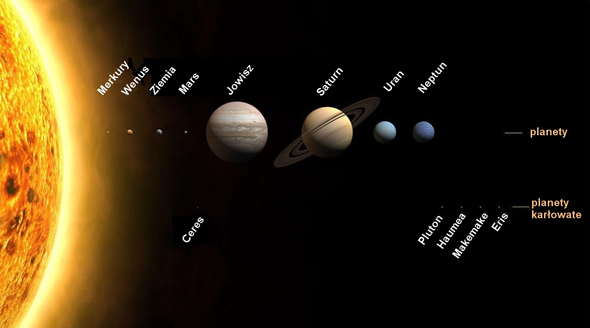

Układ słoneczny
Układ słoneczny jest układem planetarnym w galaktyce Drogi Mlecznej, składającym się ze Słońca i powiązanych z nim grawitacyjnie ciał niebieskich: ośmiu planet, co najmniej 205 ich księżyców, pięciu planet karłowatych i miliardów (a być może nawet bilionów) małych ciał, do których zalicza się planetoidy, komety i meteoroidy, a także pył międzyplanetarny.
Zbadane regiony Układu Słonecznego zawierają, licząc od Słońca: cztery planety skaliste (Merkury, Wenus, Ziemia, Mars), pas planetoid składający się z małych skalistych ciał, cztery zewnętrzne gazowe olbrzymy (Jowisz, Saturn, Uran, Neptun) oraz drugi pas składający się z obiektów skalno-lodowych, tak zwany Pas Kuipera.
Szacuje się, że formowanie się i ewolucja Układu Słonecznego rozpoczęły się 4,6 miliarda lat temu, gdy na skutek grawitacyjnego zapadnięcia się części niestabilnego obłoku molekularnego rozpoczął się proces formowania Słońca i innych gwiazd. Układ wciąż podlega ewolucyjnym i chaotycznym zmianom i nie będzie istniał wiecznie w obecnej postaci. Za około 4 miliardy lat rozpocznie się zderzenie Galaktyki Andromedy z Drogą Mleczną, a w ciągu około 5 miliardów lat Słońce wielokrotnie się powiększy, stając się czerwonym olbrzymem, co doprowadzi do zniszczenia planet wewnętrznych, w tym Ziemi.
- Źródło WikipediaMercury
- Pierwsza planeta układu słonecznego
- Typ planety: planeta skalista
- Temperatura powierzchni od −173 °C do 427 °C.
- Okres obrotu: 58 d 15 h 26 m
- Okres orbitalny: 87,969 dni
- Gęstość: 5427 kg/m³
- Nie posiada naturalnych satelit

Wenus
- Druga planeta układu słonecznego
- Typ planety: planeta skalista
- Temperatura powierzchni: średnio: 737 K
- Okres obrotu: −243,025 d (obrót wsteczny)
- Okres orbitalny: 224,701 d
- Gęstość: 5243 kg/m³
- Nie posiada naturalnych satelit

Ziemia
- Trzecia planeta układu słonecznego
- Typ planety: planeta skalista
- Temperatura powierzchni: 185–331 K
- Okres obrotu: 23,9345 h
- Okres orbitalny: 365,256363004 d
- Gęstość: 5513 kg/m³
- Naturalny satelita: Księżyc
Mars
- Czwarta planeta układu słonecznego
- Typ planety: planeta skalista
- Temperatura powierzchni: -140.15 °C – 19.85 °C
- Okres obrotu: 24,6229 h
- Okres orbitalny: 686,980 d
- Gęstość: 3933 kg/m³
- Naturalne satelity: Deimos i Fobos

Jowisz
- Piąta planeta układu słonecznego
- Typ planety: planeta gazowa
- Temperatura powierzchni: 165 K
- Okres obrotu: 9,9250 h
- Okres orbitalny: 4332,589 d
- Gęstość: 1326 kg/m³
- Naturalne satelity: 79,
w tym Europa, Io, Ganimedes, Kallisto
Saturn
- Szósta planeta układu słonecznego
- Typ planety: planeta gazowa
- Temperatura powierzchni: 134 K
- Okres obrotu: 10,656 h
- Okres orbitalny: 29,457 lat
- Gęstość: 687 kg/m³
- Naturalne satelity: 82,
w tym Tytan, Mimas, Rea
Uran
- Siódma planeta układu słonecznego
- Typ planety: planeta gazowa
- Temperatura powierzchni: 76 K
- Okres obrotu: −17,24 h (obrót wsteczny)
- Okres orbitalny: 84,011 lat
- Gęstość: 1271 kg/m³
- Naturalne satelity: 27,
w tym Umbriel, Miranda, Ariel, Oberon
Neptun
- Ósma planeta układu słonecznego
- Typ planety: planeta gazowa
- Temperatura powierzchni: 72 K
- Okres obrotu: 16,11 h
- Okres orbitalny: 164,79 lat
- Gęstość: 1638 kg/m³
- Naturalne satelity: 14,
w tym Tryton, Proteusz